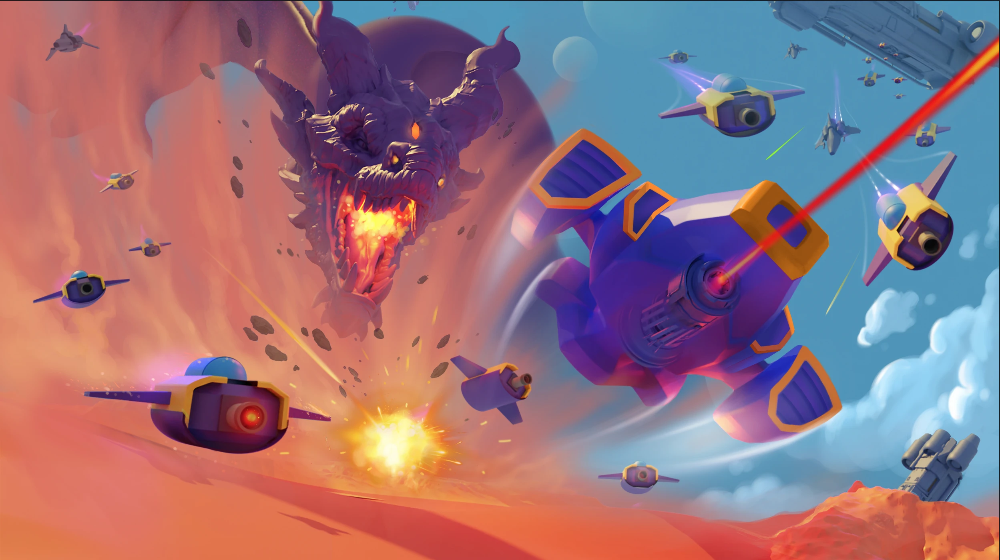

Hard-Surface · Organic Design · Concept Art · 2020
Driven by rigorous world-building mechanics, Starquest cross-pollinates hard-surface industrial engineering with organic character and creature design. The project features a complete universe of designs spanning capital-class destroyer ships, satellites, pilot helmets, weapon systems, robotic units, and alien debris — alongside environmental assets such as out-of-bounds walls, turret systems, and trail effects that define the game's spatial language.
Year
2020
Role
Concept Artist
Disciplines
Hard-Surface Design, Organic Design, World-Building, Environmental Art
02 — Art Brief
Starquest asked for an entire universe of production-ready concept art that still had to read clearly on a phone screen. The brief below is what I held the whole pipeline to.
Premise
A mobile sci-fi top-down shooter developed at Cosmic Game, demanding production-ready concept art across an expansive suite of ship designs, environmental hazards, VFX systems, and narrative world-building assets, built as Lead Concept Artist.
Mood & Tone
A saturated deep-space palette — vibrant nebula colors and high-contrast ship silhouettes designed to survive a phone screen in direct sunlight, not just a desktop monitor in a dark studio.
Deliverables
A modular ship-building system with tiered weapon upgrades, environments spanning planetary surfaces to debris fields, pilot equipment, turret systems, and chapter-spanning world-building sheets that escalate hazard density across warzones.
Pipeline & Constraints
Readability at small screen scale was the core constraint. Every silhouette, projectile trail, and energy burst was engineered for instant recognition on mobile viewports through high-contrast forms — the question was never 'does this look good,' it was 'does this read in half a second.'
03 — The Problem
Designing for a screen the size of a palm
Readability at small scale forced every ship, creature, and hazard to work as pure silhouette before any surface detail mattered. Deep-space content also had to compete with mobile UI chrome for the same few square inches, so shape language had to do the job that lighting and texture usually do.
Escalating a world without reskinning it
The chapter world-building sheets show the same terrain recurring across five difficulty tiers, with only hazard density and threat percentage climbing. The ground had to keep reading as the same planet at warzone 1 and warzone 5, while still visibly telegraphing that the danger has gone up.
A universe wide enough to reuse, tight enough to feel unified
Capital ships, alien creatures, weapons, and environmental debris all needed to share one visual language, because the modular ship-building system depends on players recombining parts that were never designed together and still having them read as one coherent object.


.webp)


.webp)


